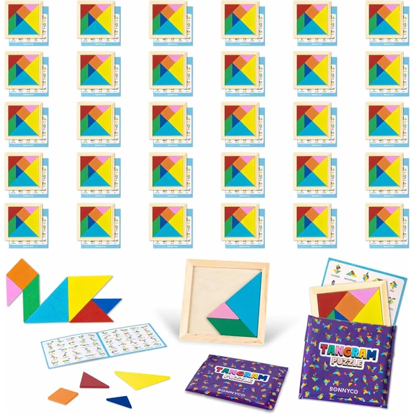
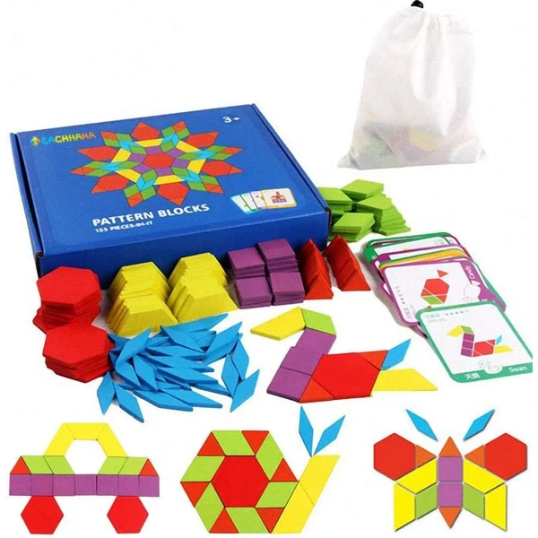

✨ Guía especial
El tangram es un rompecabezas de origen chino formado por 7 piezas geométricas —2 triángulos grandes, 1 triángulo mediano, 2 triángulos pequeños, 1 cuadrado y 1 paralelogramo— que, combinadas entre sí sin superponerse, permiten formar miles de figuras distintas: desde formas geométricas simples hasta siluetas de animales, personas u objetos. A diferencia de un puzzle convencional, aquí no hay una única solución: el reto está en encontrar la disposición correcta para cada figura propuesta.
Formar el cuadrado original es el primer reto clásico del tangram, y también el más buscado. Aunque existe una única disposición que reconstruye el cuadrado perfecto, esta es la estrategia que mejor funciona para llegar a ella sin frustrarse:
Más allá del cuadrado, algunas de las figuras más buscadas para practicar son el corazón, distintos triángulos de mayor tamaño combinando varias piezas, y siluetas tradicionales chinas como el gato o la casa. Todas siguen la misma lógica: empezar por las piezas grandes para fijar la estructura general y terminar con las pequeñas para ajustar los detalles.
Más allá del juego, el tangram es una herramienta muy usada en el aula por su valor educativo: trabaja el razonamiento espacial, la lógica y la capacidad de planificación, ya que cada movimiento condiciona las posibilidades de las piezas restantes. También favorece la paciencia y la tolerancia a la frustración, al tratarse de un reto que casi siempre exige varios intentos antes de dar con la solución correcta.
Set de piezas resistentes con tarjetas de figuras para practicar, ideal para introducir el tangram desde los primeros años de primaria.

Bonnyco Ver en Amazon →
Eachhaha Ver en Amazon →